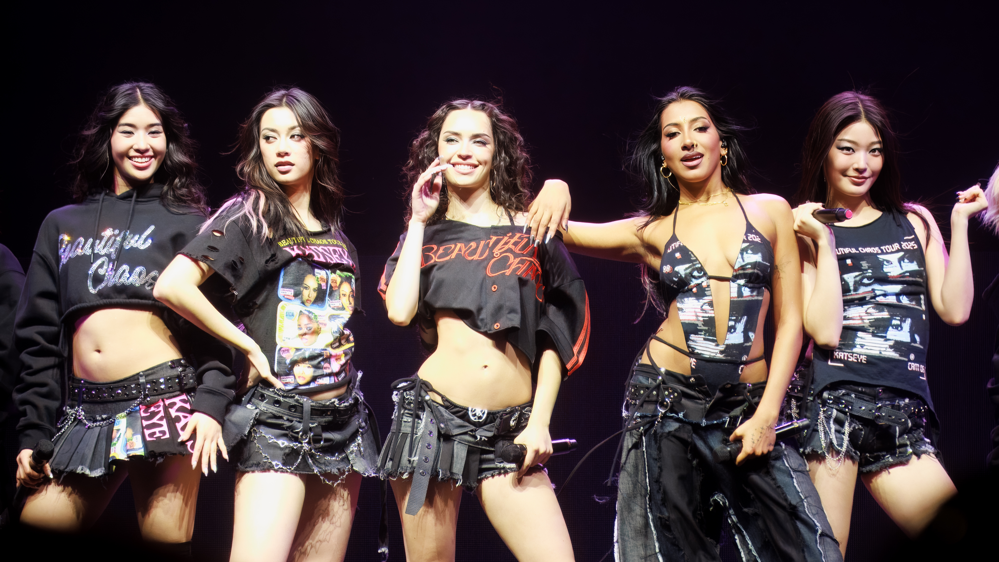
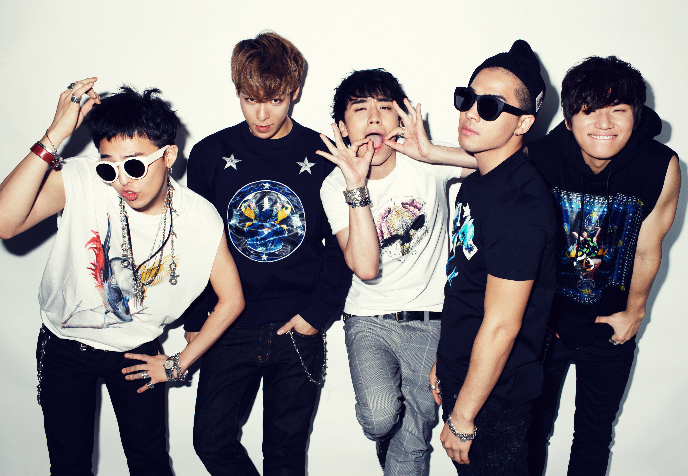
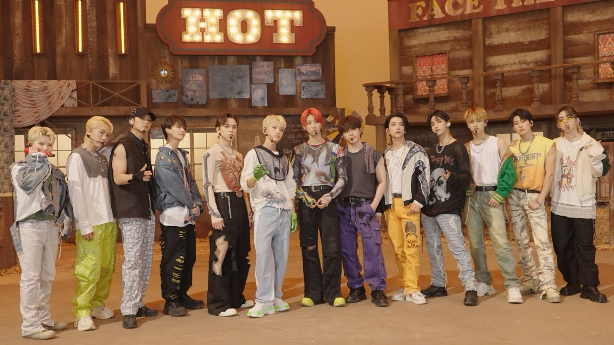
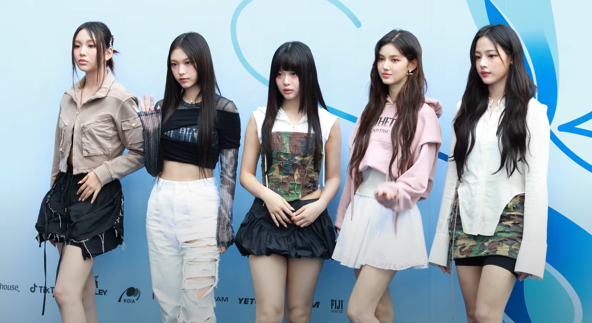

Katseye is a six members international girl group created by HYBE and Geffen Records through a global audition series called "The Debut: Dream Academy. They received a lot of recognition from fan with their debut song "Touch". Check out the song at the link below:
Touch By KatseyeBlackpink is a four members girl group created by YG entertainment in 2016. Since 2018, Blackpink smash hit "DDU-DU DDU-DU" help the group receiving a lot of recognition from all around the world. The song made history by becoming the first music video by a Kpop group to surpass two billion views on Youtube.
BLACKPINK - DDU-DU DDU-DU
Bigbang is a five members boy group from YG entertainment. The group was created since 2006, and they are still active until now. The group received the international recognition in 2012 with the song "Fantasic baby".
BIGBANG - FANTASTIC BABY
Seventeen is a thirteen members boy group created by Pledis Entertainment. Unlike many idol groups that rely on external production houses, Seventeen build their leagacy by producing their own songs from day one. The most famous song from this group is called "Hot". Check it their music video at the link below.
SEVENTEEN - HOT
NewJeans is a five members girl group formed by ADOR, a sub-label of HYBE entertainment. "Ditto" is a pre-realease song for their single album "OMG" in 2022. This song have helped NewJeans acheived a lot of awards in South Korea.
NEWJEANS - DITTO